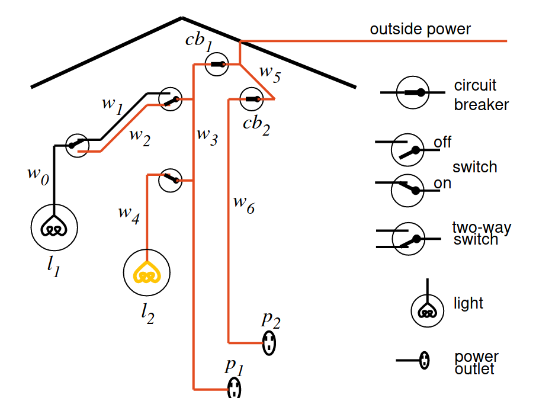

Tema 14: Programación de metaintérpretes
Índice
1. Base de conocimiento del sistema eléctrico
- El sistema eléctrico que se va a representar es el siguiente (Poole-98
p. 16)
 Operadores
:- op(1100, xfx, <-). :- op(1000, xfy, &).
luz(?L)se verifica siLes una luzluz(l1) <- verdad. luz(l2) <- verdad.
abajo(?I)se verifica si el interruptorIestá hacia abajo.abajo(i1) <- verdad.
arriba(?I)se verifica si el interruptorIestá hacia arriba.arriba(i2) <- verdad. arriba(i3) <- verdad.
está_bien(?X)se verifica si la luz (o cortacircuito)Xestá bien.está_bien(l1) <- verdad. está_bien(l2) <- verdad. está_bien(cc1) <- verdad. está_bien(cc2) <- verdad.
conectado(?D1,?D2)se verifica si los dispositivosD1yD2están conectados (de forma que puede fluir la corriente eléctrica deD2aD1).conectado(l1,c0) <- verdad. conectado(c0,c1) <- arriba(i2). conectado(c0,c2) <- abajo(i2). conectado(c1,c3) <- arriba(i1). conectado(c2,c3) <- abajo(i1). conectado(l2,c4) <- verdad. conectado(c4,c3) <- arriba(i3). conectado(e1,c3) <- verdad. conectado(c3,c5) <- está_bien(cc1). conectado(e2,c6) <- verdad. conectado(c6,c5) <- está_bien(cc2). conectado(c5,entrada) <- verdad.
tiene_corriente(?D)se verifica si el dispositivoDtiene corriente.tiene_corriente(D) <- conectado(D,D1) & tiene_corriente(D1). tiene_corriente(entrada) <- verdad.
está_encendida(?L)se verifica si la luzLestá encendida.está_encendida(L) <- luz(L) & está_bien(L) & tiene_corriente(L).
- El código se encuentra en i_electrica.pl.
2. Metaintérpretes simples
2.1. Metaintéprete básico
prueba(+O)se verifica si el objetivoOse puede demostrar a partir de la base de conocimiento. Por ejemplo,?- prueba(está_encendida(X)). X = l2 ; false.
Su definición es
prueba(verdad). prueba((A & B)) :- prueba(A), prueba(B). prueba(A) :- (A <- B), prueba(B).
Ejemplos de pruebas
?- [i_electrica]. true. ?- prueba(luz(l1)). true ?- prueba(luz(l6)). false. ?- prueba(arriba(X)). X = i2 ; X = i3 ; false. ?- prueba(conectado(l1,D)). D = c0 ; false. ?- prueba(conectado(c0,D)). D = c1 ; false. ?- prueba(conectado(c1,D)). false. ?- prueba(conectado(D,c3)). D = c2 ; D = c4 ; D = e1 ; false. ?- prueba(conectado(X,Y)). X = l1, Y = c0 ; X = c0, Y = c1 ; X = c2, Y = c3 ; X = l2, Y = c4 ; X = c4, Y = c3 ; X = e1, Y = c3 ; X = c3, Y = c5 ; X = e2, Y = c6 ; X = c6, Y = c5 ; X = c5, Y = entrada ; false. ?- prueba(tiene_corriente(D)). D = c2 ; D = l2 ; D = c4 ; D = e1 ; D = c3 ; D = e2 ; D = c6 ; D = c5 ; D = entrada ; false. ?- prueba(esta_encendida(X)). X = l2 ; false.
- El código se encuentra en meta_simple.pl.
2.2. Metaintéprete ampliado
- Ampliación del lenguaje base:
- Disyunciones:
A ; B - Predicados predefinidos:
is,<, …
- Disyunciones:
Operadores
:- op(1100, xfx, <-). :- op(1000, xfy, [&,;]).
Base de conocimiento de vecinos
vecino(X,Y) <- Y is X-1 ; Y is X+1.
- El código de la base de conocimiento de vecinos se encuentra en vecino.pl.
prueba(+O)se verifica si el objetivoOse puede demostrar a partir de la base de conocimiento (que puede contener disyunciones y predicados predefinidos). Por ejemplo,?- [vecino]. true. ?- prueba(vecino(2,3)). true. ?- prueba(vecino(3,2)). true.
Su definición es
prueba(verdad). prueba((A & B)) :- prueba(A), prueba(B). prueba((A ; B)) :- prueba(A). prueba((A ; B)) :- prueba(B). prueba(A) :- predefinido(A), A. prueba(A) :- (A <- B), prueba(B).
predefinido(+O)se verifica siOes un predicado predefinido.predefinido((X is Y)). predefinido((X < Y)).
- El código del metaintéprete ampliado se encuentra en meta_ampliado.pl.
2.3. Metaintérprete con profundidad acotada
Ejemplo de base de conocimiento de hermandad:
hermano(X,Y) <- hermano(Y,X). hermano(b,a) <- verdad.
- El código de la base de conocimiento de hermandad se encuentra en hermano.pl.
Fallo al buscar la prueba con el metaintérprete simple.
?- [meta_simple]. true. ?- prueba(hermano(X,Y)). ERROR: Stack limit (1.0Gb) exceeded
prueba_pa(+O,+N)es verdad si el objetivoOse puede demostrar con profundidadNcomo máximo. Por ejemplo,?- [hermano]. true. ?- prueba_pa(hermano(a,X),1). X = b ; false. ?- prueba_pa(hermano(X,Y),1). X = a, Y = b ; X = b, Y = a ; false. ?- prueba_pa(hermano(a,X),2). X = b ; false. ?- prueba_pa(hermano(a,X),3). X = b ; X = b ; false.
Su definición es
prueba_pa(verdad,_N). prueba_pa((A & B),N) :- prueba_pa(A,N), prueba_pa(B,N). prueba_pa(A,N) :- N >= 0, N1 is N-1, (A <- B), prueba_pa(B,N1).
- El código del metaintérprete con profundidad acotada se encuentra en meta_pa.pl.
Prueba con el metaintérprete simple usando
call_with_depth_limit?- call_with_depth_limit(prueba(hermano(X,Y)),1,R). R = depth_limit_exceeded. ?- call_with_depth_limit(prueba(hermano(X,Y)),2,R). X = b, Y = a, R = 3 ; R = depth_limit_exceeded. ?- call_with_depth_limit(prueba(hermano(X,Y)),3,R). X = a, Y = b, R = 4 ; X = b, Y = a, R = 4 ; false. ?- call_with_depth_limit(prueba(hermano(X,Y)),4,R). X = b, Y = a, R = 5 ; X = a, Y = b, R = 5 ; X = b, Y = a, R = 4 ; false.
3. Metaintérprete con preguntas
Ampliación de la base de conocimiento del sistema eléctrico.
preguntable(arriba(_)). preguntable(abajo(_)).
- El código de la base de conocimiento se encuentra en i_electrica_con_preguntas.pl.
prueba_p(+O)se verifica si el objetivoOse puede demostrar a partir de la BC objeto y las respuestas del usuario. Por ejemplo,?- [i_electrica_con_preguntas, meta_con_preguntas]. true. ?- prueba_p(esta_encendida(L)). ¿Es verdad arriba(i2)? (si/no) |: si. ¿Es verdad arriba(i1)? (si/no) |: no. ¿Es verdad abajo(i2)? (si/no) |: no. ¿Es verdad arriba(i3)? (si/no) |: si. L = l2 ?- listing(respuesta). :- dynamic respuesta/2. respuesta(arriba(i2), si). respuesta(arriba(i1), no). respuesta(abajo(i2), no). respuesta(arriba(i3), si). true. ?- retractall(respuesta(_,_)). true. ?- prueba_p(esta_encendida(L)). ¿Es verdad arriba(i2)? (si/no) |: si. ¿Es verdad arriba(i1)? (si/no) |: si. L = l1
Su definición es
prueba_p(verdad). prueba_p((A & B)) :- prueba_p(A), prueba_p(B). prueba_p(G) :- preguntable(G), respuesta(G,si). prueba_p(G) :- preguntable(G), no_preguntado(G), pregunta(G,Respuesta), assert(respuesta(G,Respuesta)), Respuesta=si. prueba_p(A) :- (A <- B), prueba_p(B).
respuesta(?O,?R)se verifica si la respuesta al objetivoOesR. (Se añade dinámicamente a la base de datos).:- dynamic respuesta/2.
no_preguntado(+O)es verdad si el objetivoOno se ha preguntado.no_preguntado(O) :- not(respuesta(O,_)).
pregunta(+O, -Respuesta)preguntaOal usuario y éste responde laRespuesta.pregunta(O,Respuesta) :- escribe_lista(['¿Es verdad ',O,'? (si/no)']), read(Respuesta).
escribe_lista(+L)escribe cada uno de los elementos de la listaL.escribe_lista([]) :- nl. escribe_lista([X|L]) :- write(X), escribe_lista(L).
- El código del metaintérprete con preguntas se encuentra en meta_con_preguntas.pl.
4. Metaintérprete con explicación
4.1. Metaintéprete con árbol de prueba
prueba_con_demostración((+O,?A)es verdad siAes un árbol de prueba del objetivoO. Por ejemplo,?- [i_electrica]. true. ?- prueba_con_demostracion(está_encendida(L),T). L = l2 T = si(está_encendida(l2), (si(luz(l2), verdad) & si(está_bien(l2), verdad) & si(tiene_corriente(l2), (si(conectado(l2, c4), verdad) & si(tiene_corriente(c4), (si(conectado(c4, c3), si(arriba(i3), verdad)) & si(tiene_corriente(c3), (si(conectado(c3, c5), si(está_bien(cc1), verdad)) & si(tiene_corriente(c5), (si(conectado(c5, entrada), verdad) & si(tiene_corriente(entrada), verdad)))))))))))
Su definición es
prueba_con_demostración((verdad,verdad). prueba_con_demostración(((A & B),(PA & PB)) :- prueba_con_demostración((A,PA), prueba_con_demostración((B,PB). prueba_con_demostración((O,si(O,PB)) :- (O <- B), prueba_con_demostración((B,PB).
- El código del metaintérprete con árbol de prueba se encuentra en meta_con_explicacion_arbol.pl.
4.2. Metaintérprete con explicación de cómo deduce.
prueba_con_explicación(+O)significa probar el objetivoOa partir de la base de conocimiento y navegar por su árbol de prueba mediante preguntas. Por ejemplo,?- [i_electrica]. true. ?- prueba_con_explicación(está_encendida(L)). está_encendida(l2) :- 1: luz(l2) 2: está_bien(l2) 3: tiene_corriente(l2) |: 3. tiene_corriente(l2) :- 1: conectado(l2, c4) 2: tiene_corriente(c4) |: 2. tiene_corriente(c4) :- 1: conectado(c4, c3) 2: tiene_corriente(c3) |: 1. conectado(c4, c3) :- 1: arriba(i3) |: 1. arriba(i3) es un hecho L = l2
Su definición es
prueba_con_explicación(O) :- prueba_con_demostración((O,A), navega(A).
navega(+A)significa que se está navegando en el árbolA.navega(si(A,verdad)) :- escribe_lista([A,' es un hecho']). navega(si(A,B)) :- B \== verdad, escribe_lista([A,' :-']), escribe_cuerpo(B,1,_), read(Orden), interpreta_orden(Orden,B).
escribe_lista(+L)escribe cada uno de los elementos de la listaL.escribe_lista([]) :- nl. escribe_lista([X|L]) :- write(X), escribe_lista(L).
escribe_cuerpo(+B,+N1,?N2)es verdad siBes un cuerpo que se va a escribir,N1es el número de átomos antes de la llamada aByN2es el número de átomos después de la llamada aBescribe_cuerpo(verdad,N,N). escribe_cuerpo((A & B),N1,N3) :- escribe_cuerpo(A,N1,N2), escribe_cuerpo(B,N2,N3). escribe_cuerpo(si(H,_),N,N1) :- escribe_lista([' ',N,': ',H]), N1 is N+1.
interpreta_orden(+Orden,+B)interpreta laOrdensobre el cuerpoB.interpreta_orden(N,B) :- integer(N), nth(B,N,E), navega(E).
nth(+E,+N,?A)es verdad siAes elN-ésimo elemento de la estructuraEnth(A,1,A) :- not((A = (_,_))). nth((A&_),1,A). nth((_&B),N,E) :- N>1, N1 is N-1, nth(B,N1,E).
- El código del metaintérprete con explicaciones de cómo se encuentra en meta_con_explicacion_como.pl.
4.3. Metaintérprete con explicación de por qué plantea una pregunta
prueba_con_porque(O)significa probar el objetivoO, con las respuestas del usuario, permitiéndole preguntar por qué se le plantean preguntas. Por ejemplo,?- [i_electrica_con_preguntas]. true. ?- prueba_con_porque(esta_encendida(L)). ¿Es verdad arriba(i2)? (si/no/porque) |: porque. Se usa en: conectado(c0,c1) <- arriba(i2). ¿Es verdad arriba(i2)? (si/no/porque) |: porque. Se usa en: tiene_corriente(c0) <- conectado(c0,c1) & tiene_corriente(c1). ¿Es verdad arriba(i2)? (si/no/porque) |: porque. Se usa en: tiene_corriente(l1) <- conectado(l1,c0) & tiene_corriente(c0). ¿Es verdad arriba(i2)? (si/no/porque) |: porque. Se usa en: esta_encendida(l1) <- luz(l1) & esta_bien(l1) & tiene_corriente(l1). ¿Es verdad arriba(i2)? (si/no/porque) |: porque. Porque esa fue su pregunta! ¿Es verdad arriba(i2)? (si/no/porque) |: si. ¿Es verdad arriba(i1)? (si/no/porque) |: porque. Se usa en: conectado(c1,c3) <- arriba(i1). ¿Es verdad arriba(i1)? (si/no/porque) |: no. ¿Es verdad abajo(i2)? (si/no/porque) |: porque. Se usa en: conectado(c0,c2) <- abajo(i2). ¿Es verdad abajo(i2)? (si/no/porque) |: si. ¿Es verdad abajo(i1)? (si/no/porque) |: si. L = l1
Su definición es
prueba_con_porque(O) :- prueba_con_porque_aux(O,[]).
prueba_con_porque_aux(O,Antecesores)se verifica siOes probable con la lista deAntecesores. Pregunta al usuario y las posibles respuesta son Sí, No o Por qué hace la pregunta.prueba_con_porque_aux(verdad,_). prueba_con_porque_aux((A & B), Antecesores) :- prueba_con_porque_aux(A,Antecesores), prueba_con_porque_aux(B,Antecesores). prueba_con_porque_aux(O,_) :- preguntable(O), respuesta(O,si). prueba_con_porque_aux(O,Antecesores) :- preguntable(O), no_preguntado(O), pregunta(O,Respuesta,Antecesores), assert(respuesta(O,Respuesta)), Respuesta=si. prueba_con_porque_aux(A,Antecesores) :- (A <- B), prueba_con_porque_aux(B,[(A <- B)|Antecesores]).
respuesta(O,Respuesta)se añade dinámicamente a la base de datos.:- dynamic respuesta/2.
no_preguntado(O)se verifica si el objetivoOno se ha preguntado.no_preguntado(G) :- \+ respuesta(G,_).
pregunta(O,Respuesta,Antecesores)pregunta al usuario, en el contexto dado por losAntecesores, la cuestiónOy éste escribe laRespuesta.pregunta(O,Respuesta,Antecesores) :- escribe_lista(['¿Es verdad ',O,'? (si/no/porque)']), read(Replica), interpreta(O,Respuesta,Replica,Antecesores).
escribe_lista(L)escribe cada uno de los elementos de la lista L.escribe_lista([]) :- nl. escribe_lista([X|L]) :- write(X), escribe_lista(L).
interpreta(O,Respuesta,Replica,Antecesores)interpreta laReplica(cuyos posibles valores sonsi,nooporque) en el contexto de losAntecesores.interpreta(_,Replica,Replica,_) :- Replica \== porque. interpreta(O,Respuesta,porque,[Regla|Reglas]):- write('Se usa en:'), nl, escribe_regla(Regla), pregunta(O,Respuesta,Reglas). interpreta(O,Respuesta,porque,[]):- write('Porque esa fue su pregunta!'), nl, pregunta(O,Respuesta,[]).
escribe_regla(R)escribe la reglaR.escribe_regla((A <- B)) :- escribe_lista([' ',A, ' <- ']), escribe_cuerpo(B).
escribe_cuerpo(C)escribe el cuerpoCde una regla.escribe_cuerpo((A & B)) :- escribe_lista([' ',A, ' &']), escribe_cuerpo(B). escribe_cuerpo(A) :- \+ A = (_B & _C), escribe_lista([' ',A,'.']).
- El código del metaintérprete con explicaciones de por qué se encuentra en meta_con_explicacion_porque.pl.
5. Bibliografía
- T. Cornell.
Introduction to Prolog.
(Universität Tübingen, 1998).
- Cap. 12: Metaleanguage, metalogic an metaprogramming.
- Cap. 13: Prolog as an assembler for logic programming systems.
- D. Poole, A. Mackworth y R. Goebel.
Computational intelligence (A logical approach).
(Oxford University Press, 1998)
- Cap. 5: Knowledge engineering.
- Y. Shoham.
Artificial intelligence techniques in Prolog.
(Morgan Kaufmann, 1994).
- Cap. 3: Backward-chaining methods.
- M. Triska A couple of meta-interpreters in Prolog.